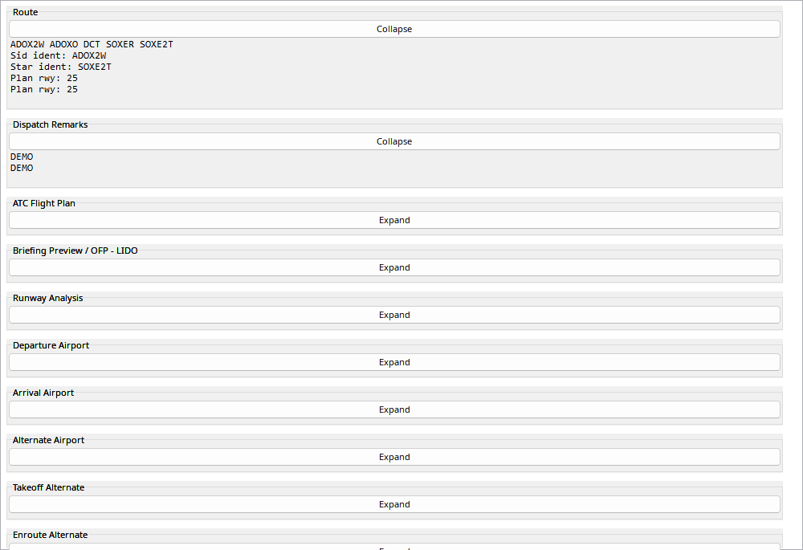
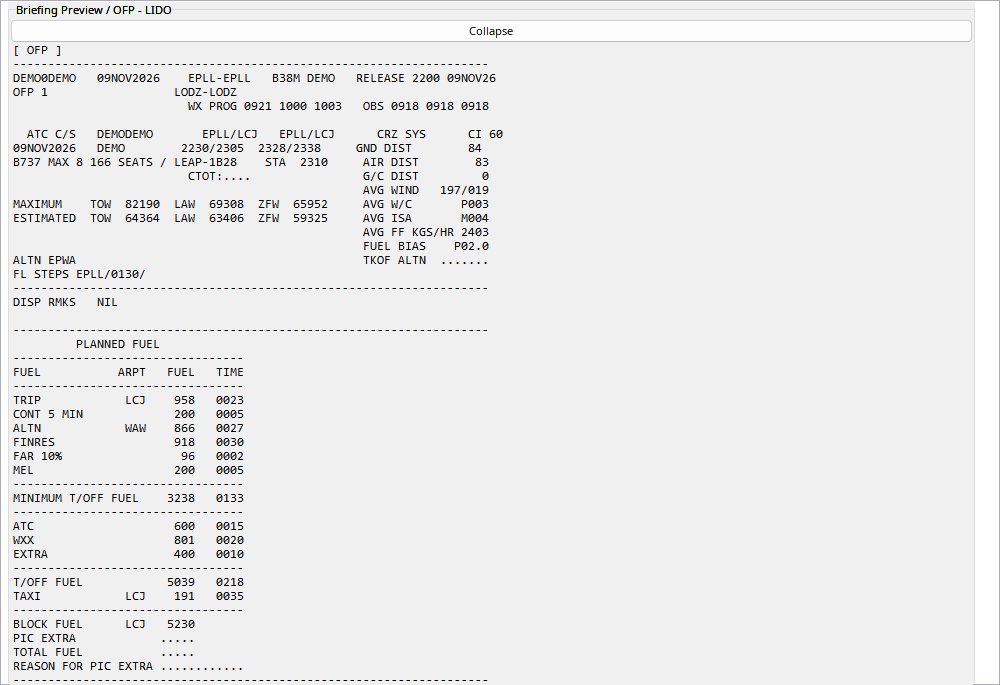

The manual uses an anonymized EPLL–EPLL plan. Flight number and registration are demonstrative; account/crew data and personal links are excluded. OFP calculations are planned quantities, not telemetry measurements.
Expand briefing sections independently. The mouse wheel scrolls the container even over the monospace OFP text. Briefing maps are stored as images with the flight, so later viewing does not depend on a live GIF link. There is no action to prefile a historical plan on VATSIM or another network. Before attaching a plan compare airports, aircraft and time: the account’s latest plan may belong to another flight.
SimBrief is a plan/briefing source, not measured aircraft telemetry. Import needs its configured account identifier and a network connection.
| Option / action | Behavior and limitations |
|---|---|
| Import | Fetch with SimBrief controls and verify aircraft, route and planned time belong to the selected flight before attaching. |
| OFP | Read-only native monospace text. Scroll the briefing container with the wheel, including when the pointer is over the OFP. |
| Maps | Available maps are downloaded into the recording, not left merely as GIF links. Saved maps remain usable without the original remote link. |
| Comparison | Planned mass, fuel and wind are distinct from actual values. Matching route names may help coordinate-only EFB fixes with AIRAC differences. |
| No network filing | Opening an old OFP does not file it on VATSIM or another network; historical plans have no Submit plan to network action. |

